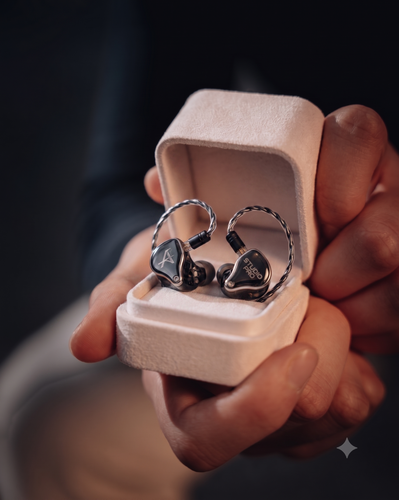

🎉 Offiziell eingeladen zum
Junggesellenabschied
Ein Mann. Drei Leidenschaften. Eine letzte Nacht als freier Mann.
Schlagzeug. Fahrrad. Inears. Und ab jetzt: Ehefrau.
Die Geschichte des Mannes, der alles hat – außer Vernunft
Jonathan ist kein gewöhnlicher Mensch. Er ist der Typ, der beim Fahrrad kaufen mehr Zeit verbringt als bei der Hochzeitsplanung. Der Mann, der seine Inears in einem Schmuckkoffer aufbewahrt – als wären sie Verlobungsringe. Und der Schlagzeug ans Meer schleppt, weil… ja, warum eigentlich nicht?
Heute Nacht feiern wir genau diesen Mann. Den letzten Abend seiner offiziellen Freiheit. Und wir tun das mit der gleichen Energie, mit der er seine Bassdrum tritt.

Studio Pro InearsLeidenschaft Nr. 1
Während andere Männer ihre Verlobungsringe im Schmuckkästchen präsentieren, präsentiert Jonathan seine Studio Pro Inears in einem Samtkoffer. Und ehrlich gesagt – kann man das kritisieren? Nein. Man kann es nur bewundern.
Diese kleinen Teile kosten mehr als mancher Gebrauchtwagen. Jonathan poliert sie abends. Er trägt sie mit Handschuhen an. Er spricht sanft über sie. Und wenn jemand fragt "Darf ich mal kurz hören?" – dann weißt du, was kommt: ein leises, aber bestimmtes "Nein."
"Sie klingen besser als alles, was ich je gehört habe – und das sage ich als jemand, der bald eine Hochzeit plant."
– Jonathan, vermutlichLeidenschaft Nr. 2
Dieses Bild sagt alles. Jonathan trägt sein Fahrrad auf den Schultern wie einen Thron. Am Strand. Bei Sonnenuntergang. Mit einem Lächeln, das sagt: "Ich bin glücklicher als alle Menschen auf dieser Erde."
Das Fahrrad ist aus Carbon. Es wiegt weniger als Jonathans Entscheidung, welches Kettenöl er kaufen soll. Es kostet mehr als sein erstes Auto. Und er trägt es – buchstäblich auf Händen. Oder zumindest auf Schultern. Romantischer geht's kaum.
"Ich trag's selbst, damit kein Kratzer rankommt. Das ist keine Faulheit, das ist Liebe."
– Jonathan, nach dem Strand-ShootingLeidenschaft Nr. 3 – Die Größte
Dieses Foto. Dieses legendäre Foto. Jonathan steht barfuß am Strand. Das Schlagzeug in den Armen. Er küsst es. Nicht symbolisch. Nicht ironisch. Er küsst sein Schlagzeug am Strand wie ein Mann, der weiß, was er liebt.
Man sagt, ein Mann sollte vor seiner Hochzeit wissen, was ihm wirklich wichtig ist. Jonathan weiß es. Es ist ein goldenes, mahagoni-gebürstetes Drumkit mit Becken, Stehern und Chrome-Hardware. Schön.
Die Frage, die uns alle beschäftigt: Wird die Ehefrau auf Platz 1 oder Platz 2 landen? Das Schlagzeug ist gewarnt.
"Ich hab's ans Meer geschleppt. Damit es weiß, wie weit ich für es gehe."
– Jonathan, Romantiker des JahresDie Chronik eines außergewöhnlichen Lebens
Jonathan kommt auf die Welt und tippt sofort im 4/4-Takt gegen die Krippe. Ärzte sind verwirrt. Eltern sind stolz. Das Schlagzeug wartet bereits.
Jonathan bekommt ein Schlagzeug. Die Nachbarn ziehen aus. Die Familie hält durch. Jonathan übt täglich. Manchmal auch nachts. Gott sei Dank ist er gut geworden.
Jonathan entdeckt das Radfahren. Plötzlich gibt es zwei Dinge, über die er stundenlang reden kann: Schlagzeug und Carbonrahmen. Freunde nehmen Notiz.
Jonathan kauft sich Studio Pro Inears in einem Samtkoffer. Niemand darf sie anfassen. Er hört damit Dinge, die andere Menschen schlicht nicht verdient haben. Es ist eine neue Ära.
Wir feiern Jonathan. Den Mann, der sein Schlagzeug küsst. Der sein Fahrrad trägt. Der seine Inears im Samtkoffer hütet. Heute Nacht gehört ihm. Ab morgen: geteilt.
Für den heutigen Abend gilt:
Wenn Jonathan anfängt, über seinen Kick-Drum-Sound zu reden, trinkt jeder einen Schluck. Prophylaktisch. Weil wir alle wissen, wie das endet.
Heute Nacht kein Reden über Wattleistung, Schaltgruppen oder Kettenfett. Jeder Verstoß kostet einen Cocktail. Jonathan zahlt doppelt.
Gilt auch heute. Die Inears sind nicht dabei. Aber selbst wenn – Hände weg. Das ist heiliges Gerät. Wir respektieren das. Wir müssen.
Er hat sein Schlagzeug ans Meer geschleppt. Er verdient Respekt. Und einen Freiabend. Von uns. In vollen Zügen.
Für die Ewigkeit. Für die Hochzeitsrede. Für die Enkelkinder. Handys laden, Kameraroll leeren, bereit sein.
Das Wasser ist heute optional. Das Drumkit bleibt trocken. Jonathan kann reinspringen, das Schlagzeug nicht. Prioritäten.
Auf die Beats. Die Kilometer. Den Sound.
Und auf das nächste Kapitel.